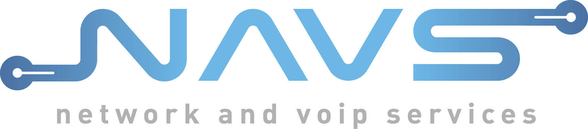

De Zusjes
Bornem
11 en 12 augustus 2017
Make a wish?
Make-A-Wish® vervult de hartenwens van kinderen die vechten tegen een levensbedreigende ziekte om hoop, sterkte en vreugde te brengen.
Voor meer uitleg kan je op de afbeelding klikken.
Volg ons!
Je kan de wandelaars volgen door op het hamburgermenu te klikken en bij wandelaars Christel of Ingrid Jacobs in te typen.
Steun ons!
Je kan ons steunen door te storten naar BE83 4093 0351 0115 met vermelding KevinsWalk. Bij een bedrag van €40 of meer krijg je een fiscaal attest.
Met dank aan
